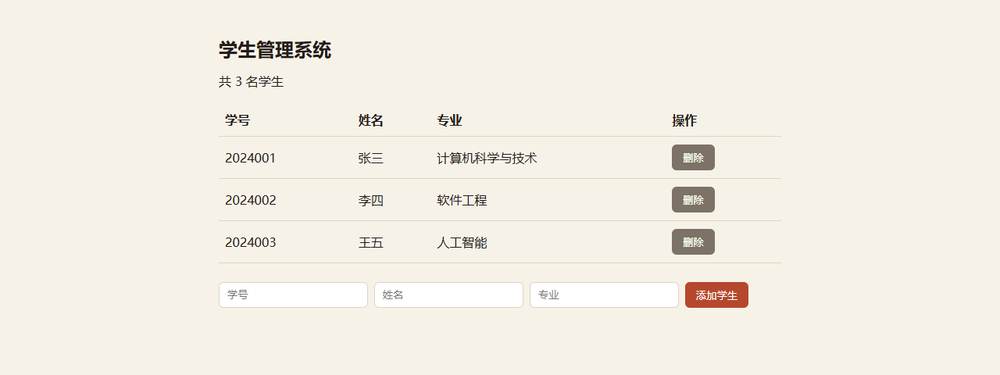
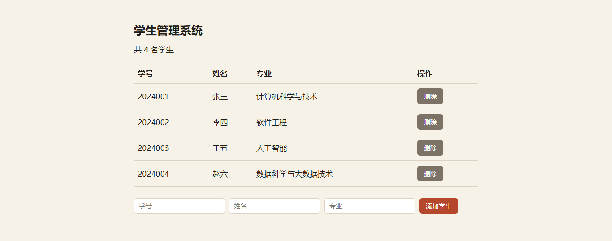

概览
所有字段以收录时的公开信息为准
- 项目名称
- Flask 学生管理系统（单文件）
- 原始名称
- 未提供
- 别名
- Flask 学生管理系统、学生管理系统、毕业设计管理系统、毕设、增删改查
- 一句话简介
- 单文件 Flask 学生管理系统，自带 SQLite 与增删改查接口。
- 详细介绍
一个文件里包含建表、示例数据、页面模板和 REST 风格接口，数据库用 SQLite 免安装。支持新增、列表、删除学生记录，并带 /health 健康检查，可以直接当作毕设骨架。启动后访问首页就能操作。
- 分类
- Web 与软件开发
- 语言
- Python
- 技术栈
- FlaskSQLite
- 上手难度
- 入门
- Star 数
- 未提供
- 许可证
- MIT
- 作者
- 开源拾遗
预览与运行效果
预览能力取决于项目真实具备的资源


截图为项目真实运行画面（2026-10-19 截取） · Windows 11 (10.0.22631) · Python 3.14.6 · Flask 3.1.3 · SQLite 3.50.4
截图按容器宽度等比缩放，点击可在新标签页查看原图。 本站是纯静态站点，不会在浏览器里运行该项目；复现请按「安装与运行」在本地执行。
终端输出与示例结果
$ python snippets/flask-student-system.py
* Serving Flask app 'flask-student-system'
* Debug mode: off
WARNING: This is a development server. Do not use it in a production deployment. Use a production WSGI server instead.
* Running on http://127.0.0.1:5000
Press CTRL+C to quit
127.0.0.1 - - [19/Oct/2026 00:55:48] "GET /health HTTP/1.1" 200 -
127.0.0.1 - - [19/Oct/2026 00:55:49] "GET / HTTP/1.1" 200 -
127.0.0.1 - - [19/Oct/2026 00:55:49] "POST /add HTTP/1.1" 302 -
127.0.0.1 - - [19/Oct/2026 00:55:51] "POST /delete/1 HTTP/1.1" 302 -
127.0.0.1 - - [19/Oct/2026 00:55:51] "GET / HTTP/1.1" 200 -示例输入
浏览器打开 http://127.0.0.1:5000，填写学号 2024001、姓名 张三、专业 计算机科学与技术，点击「添加学生」。已实际运行验证（2026-10-19） · Windows 11 (10.0.22631) · Python 3.14.6 · Flask 3.1.3 · SQLite 3.50.4
输出保留真实换行；没有实际运行记录时，页面不会标注「已验证」。 本站是纯静态站点，不会在浏览器里执行 Python / C / C++ 程序：以上是真实运行记录，复现请按「安装与运行」在本地执行。
获取方式
优先使用原始仓库
本项目通过以下方式获取：站内代码片段
文件snippets/flask-student-system.py
"""Flask 学生管理系统（单文件版）—— 站内原创示例代码
用途：一个可以直接运行的最小「学生管理系统」，包含列表、新增、删除三件事。
适合作为「Flask 学生管理系统 / 毕业设计管理系统」类题目的起点，后续可再加
登录、分页、成绩管理、导入导出等功能。
依赖：Flask（pip install flask）；数据库用 Python 自带的 sqlite3，无需安装。
运行：python flask-student-system.py，然后打开 http://127.0.0.1:5000
许可：MIT（开源拾遗原创，可自由使用与修改）
"""
import os
import sqlite3
from flask import Flask, redirect, render_template_string, request, url_for
DB_PATH = os.environ.get("DB_PATH", "students.db")
app = Flask(__name__)
PAGE = """
<!doctype html>
<html lang="zh-CN">
<head>
<meta charset="utf-8">
<meta name="viewport" content="width=device-width, initial-scale=1">
<title>学生管理系统</title>
<style>
body { font-family: system-ui, "Microsoft YaHei", sans-serif; max-width: 720px;
margin: 48px auto; padding: 0 20px; color: #211d18; background: #f7f2e8; }
h1 { font-size: 24px; }
table { width: 100%; border-collapse: collapse; margin-top: 20px; }
th, td { padding: 10px 8px; border-bottom: 1px solid #ddd3c2; text-align: left; }
form.add { display: flex; gap: 8px; margin-top: 24px; flex-wrap: wrap; }
input { padding: 8px 10px; border: 1px solid #ddd3c2; border-radius: 6px; }
button { padding: 8px 14px; border: 0; border-radius: 6px; background: #b5482c;
color: #fff; cursor: pointer; }
button.danger { background: #7c7266; }
.empty { color: #7c7266; margin-top: 20px; }
</style>
</head>
<body>
<h1>学生管理系统</h1>
<p>共 {{ students|length }} 名学生</p>
{% if students %}
<table>
<thead><tr><th>学号</th><th>姓名</th><th>专业</th><th>操作</th></tr></thead>
<tbody>
{% for s in students %}
<tr>
<td>{{ s["student_no"] }}</td>
<td>{{ s["name"] }}</td>
<td>{{ s["major"] }}</td>
<td>
<form method="post" action="{{ url_for('delete', student_id=s['id']) }}">
<button class="danger" type="submit">删除</button>
</form>
</td>
</tr>
{% endfor %}
</tbody>
</table>
{% else %}
<p class="empty">还没有学生记录，先添加一条试试。</p>
{% endif %}
<form class="add" method="post" action="{{ url_for('add') }}">
<input name="student_no" placeholder="学号" required>
<input name="name" placeholder="姓名" required>
<input name="major" placeholder="专业" required>
<button type="submit">添加学生</button>
</form>
</body>
</html>
"""
def get_db():
conn = sqlite3.connect(DB_PATH)
conn.row_factory = sqlite3.Row
return conn
def init_db():
with get_db() as conn:
conn.execute(
"""CREATE TABLE IF NOT EXISTS students (
id INTEGER PRIMARY KEY AUTOINCREMENT,
student_no TEXT NOT NULL UNIQUE,
name TEXT NOT NULL,
major TEXT NOT NULL
)"""
)
@app.route("/")
def index():
with get_db() as conn:
students = conn.execute(
"SELECT id, student_no, name, major FROM students ORDER BY id"
).fetchall()
return render_template_string(PAGE, students=students)
@app.route("/add", methods=["POST"])
def add():
student_no = (request.form.get("student_no") or "").strip()
name = (request.form.get("name") or "").strip()
major = (request.form.get("major") or "").strip()
if student_no and name and major:
with get_db() as conn:
conn.execute(
"INSERT OR IGNORE INTO students (student_no, name, major) VALUES (?, ?, ?)",
(student_no, name, major),
)
return redirect(url_for("index"))
@app.route("/delete/<int:student_id>", methods=["POST"])
def delete(student_id):
with get_db() as conn:
conn.execute("DELETE FROM students WHERE id = ?", (student_id,))
return redirect(url_for("index"))
@app.route("/health")
def health():
return {"status": "ok", "db": DB_PATH}
init_db()
if __name__ == "__main__":
app.run(host="127.0.0.1", port=5000, debug=False)站内原创示例代码，仅演示核心思路，许可证为 MIT。本条目为站内整理内容，未提供原始仓库地址。
安装与运行
命令均来自公开资料
环境与依赖
- Python 3.9+
- Flask
pip install flaskpython snippets/flask-student-system.py常见问题
- 首次运行前需要安装 Flask：pip install flask。
- 服务默认监听 127.0.0.1:5000，浏览器访问 http://127.0.0.1:5000 操作。
- 运行会在当前工作目录生成 students.db；需要干净数据时可用 DB_PATH 环境变量指向其他文件。
数据与硬件
未核实的字段不会编造
- 数据集说明
- 未提供
- 硬件要求
- 未提供
运行验证状态
四态徽章
程序可以启动并完成最基本的操作，尚未做完整实验验证。
- 未测试
- 依赖安装已测试
- 基本启动已测试
- 实验已验证
说明：只有真正执行过对应步骤才会升级状态；未测试 表示仅核对了公开信息。
- 当前状态
- 基本启动已测试
- 最后核对
- 2026-10-19
- 核对版本
- 待核实
- 验证说明
已在本地启动服务并验证：/health 正常，新增/列表/删除接口均通过。；2026-10-19 复跑：/health 200，新增/列表/删除接口全部通过
许可证与引用
转载与引用请保留出处
- 许可证
- MIT
- 作者 / 组织
- 开源拾遗
- 原始仓库
- 未提供
- 核对版本
- 待核实
- 最后核对
- 2026-10-19
- 收录日期
- 2026-10-18
引用建议
Flask 学生管理系统（单文件） / 开源拾遗. 《开源拾遗》收录，收录日期 2026-10-18，最后核对 2026-10-19. 许可证：MIT.
许可证以原始仓库的 LICENSE 文件为准；本站不对许可证做法律判断。